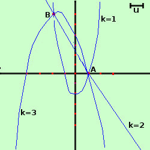

esercizio
Esercizio 2
Data la famiglia di parabole
y = (2-k)x2 -kx + 2k - 2
1) Se esistono i punti base della famiglia determinarne le coordinate
2) Scrivere l'equazione della retta r appartenente alla famiglia
3) Determinare le parabole della famiglia per k=0 e per k=3
4) Mostrare che nessuna parabola della famiglia e' tangente alla retta r
5) Riportare i risultati su un piano cartesiano
- Se esistono i punti base della famiglia determinarne le coordinate
separo i termini con il parametro da quelli senza parametro
y = (2-k)x2 -kx + 2k - 2
y = 2x2 - 2 - kx2 -kx + 2k
y = 2x2 + 3 +k(- x2 -x + 2)
Per trovare le ascisse dei punti base pongo uguale a zero l'espressione moltiplicata per il parametro
- x2 -x + 2 = 0
x2 + x - 2 = 0
Calcolo ed ottengo le soluzioni
x1 = -2 x2 = 1
Sostituisco i valori nell' equazione della famiglia
per x1 = -2
y= 2·(-2)2 -2 +k(0) = 2·4 -2 = 6
per x2 = 1
y= 2·(1)2 -2 +k(0) = 2·1 -2 = 0
quindi esistono due punti base le cui coordinate sono
A≡(-2;6) B≡(1;0)
- Scrivere l'equazione della retta r appartenente alla famiglia
Per trovare la retta dobbiamo trovare il valore di k che elimina il termine x2
quindi presa l'equazione della famiglia
y = (2-k)x2 -kx + 2k - 2
pongo (2-k)x2 = 0, cioe' 2-k = 0 ed otteniamo k = 2
sostituendo 2 al posto di k nell'equazione della famiglia otteniamo
y = (2-2)x2 -2·x + 2·2 - 2
y = -2x + 2
E' una retta passante per i due punti base della famiglia e viene anche chiamata parabola degenere del fascio
- Determinare le parabole della famiglia per k=0 e per k=3
sostituiamo a k nell'equazione della famiglia i valori assegnati, troviamo le equazioni delle parabole corrispondenti
Sostituisco k=0
y = (2-0)x2 -0·x + 2·0 - 2
ottengo
y = 2x2 - 2
E' una parabola con asse verticale, concavita' verso l'alto, simmetrica rispetto all'asse delle ordinate, con vertice nel punto (0;-2) e che taglia l'asse delle ascisse nei punti (-1;0) e (1;0) e l'asse delle ordinate nel punto (0;-2)
se vuoi vedere i calcoli per esteso
Sostituisco k=3
y = (2-3)x2 -3·x + 2·3 - 2
ottengo
y = -x2 - 3x + 4
E' una parabola con asse verticale, concavita' verso il basso, con asse di simmetria la retta y= -3/2, con vertice nel punto (-3/2;25/4) e che taglia l'asse delle ascisse nei punti (-4;0) e (1;0) e l'asse delle ordinate nel punto (0;+4)
se vuoi vedere i calcoli per esteso
- Mostrare che nessuna parabola della famiglia e' tangente alla retta r
Intuitivamente essendo la retta r la parabola degenere della famiglia anch'essa, come tutte le parabole passa per i punti base quindi ha sempre due intersezioni distinte con qualunque altra parabola della famiglia e, di conseguenza, non puo' essere tangente a nessuna. Per mostrarlo algebricamente invece facciamo il sistema fra la retta r e l'equazione della famiglia, troviamo l'equazione risultante e vedremo che essa non dipende dal valore di k
Faccio il sistema fra le equazioni della famiglia e della retta
 y = (2-k)x2 - kx + 2k - 2
y = (2-k)x2 - kx + 2k - 2
y = -2x + 2
sostituisco
-2x + 2 = (2-k)x2 - kx + 2k - 2
y = -2x + 2
calcolo
(2-k)x2 + 2x - kx + 2k - 2 -2 = 0
y = -2x + 2
(2-k)x2 + (2-k)x + 2k - 4 = 0
y = -2x + 2
quindi abbiamo l'equazione risolvente
(2-k)x2 + (2-k)x - 4 + 2k = 0
o meglio
(2-k)x2 + (2-k)x -2(2-k) = 0
supponendo 2-k≠0 cioe'k≠2 posso semplificare ed ottengo
x2 + x -2 = 0
quindi l'equazione risolvente non dipende piu' da k e quindi non e' possibile porre il delta del sistema uguale a zero, cioe' non e' possibile avere la tangenza fra la retta e una parabola non degenere della famiglia
Da notare che per k=2 ottengo la parabola degenere, cioe' la retta r
- Riportare i risultati su un piano cartesiano

|